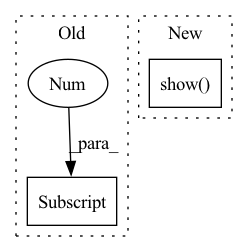

Pattern ID :28107

Before Change
if epoch == 0 or (epoch + 1) % 20 == 0:
animator.add(epoch + 1, (evaluate_loss(net, train_iter, loss),
evaluate_loss(net, test_iter, loss)))
print("weight:", net[0].weight.data.numpy())
After Change
test_loss, _ = run_epoch(model, test_features, test_labels, loss, opt=None,
batch_size=batch_size)
animator.add(epoch + 1, (train_loss, test_loss))
plt.show()
print("weight:", model.weight.numpy())
// 从多项式特征中选择前4个维度，即1,x,x^2/2!,x^3/3!
In pattern: SUPERPATTERN
Frequency: 3
Non-data size: 2
Instances
Fragment ID: 83055755
Project Name: nlp-greyfoss/metagrad
Commit Name: 7a582bdbf43b110d353166ba5cd296bba236d38e
Time: 2022-02-24
Author: jueying.szu@gmail.com
File Name: examples/polynomial_regression.py
M Class Name: AnonimousClass
N Class Name: AnonimousClass
M Method Name: train(5)
N Method Name: train(5)
M Parent Class:
N Parent Class:
M File Name: examples/polynomial_regression.py
N File Name: examples/polynomial_regression.py
M Start Line: 37
M End Line: 55
N Start Line: 38
N End Line: 59
'>
Before Change
if vis:
voxel_features_p0, voxel_coords_p0, voxel_features_p1, voxel_coords_p1, gt_pose, p0, p1 = data
p0 = p0.reshape(-1, p0.shape[2], p0.shape[3]).float().to(device)
p1 = p1.reshape(-1, p1.shape[2], p1.shape[3]).float().to(device)
else:
voxel_features_p0, voxel_coords_p0, voxel_features_p1, voxel_coords_p1, gt_pose = data
voxel_features_p0 = voxel_features_p0.reshape(-1, voxel_features_p0.shape[2], voxel_features_p0.shape[3]).to(device)
After Change
if toyexample:
visualizer = JVisualizer()
visualizer.add_geometry([pcd0, pcd1, pcd2])
visualizer.show()
else:
o3d.visualization.draw_geometries([pcd0, pcd1, pcd2])
'>
Fragment ID: 83055754
Project Name: lilac-lee/pointnetlk_revisited
Commit Name: 3bcc7fc112944b5582f4314fd26518c270132989
Time: 2021-04-25
Author: lilaclee007@gmail.com
File Name: trainer.py
M Class Name: TrainerDeterministicPointNetLK
N Class Name: TrainerDeterministicPointNetLK
M Method Name: test_one_epoch(8)
N Method Name: test_one_epoch(7)
M Parent Class:
N Parent Class:
M File Name: trainer.py
N File Name: trainer.py
M Start Line: 98
M End Line: 154
N Start Line: 87
N End Line: 163
'>
Before Change
print(f"Feature batch shape: {sample["image"].size()}")
print(f"Labels batch shape: {sample["label"].size()}")
img = sample["image"][0].squeeze()
label = sample["label"][0]
// plt.imshow(img.numpy().astype(np.uint8), cmap="gray")
// plt.savefig("test_tmp.png")
print(f"Label: {label}")
After Change
packet_sample = next(iter(packet_loader))
plt.plot(np.mean(np.reshape(packet_sample["image"][0].cpu().numpy(), [64, -1]), -1))
plt.show()
packet_data, packet_mean, packet_std = compute_mean_std(train_packet_set)
print("packet mean", packet_mean)
print("packet str", packet_std)
'>
Fragment ID: 83055752
Project Name: gan-police/frequency-forensics
Commit Name: 4134e836d0bfb2595a2c0e859a068e6c6c3ad695
Time: 2021-05-07
Author: wolter@cs.uni-bonn.de
File Name: src/freqdect/data_loader.py
M Class Name: AnonimousClass
N Class Name: AnonimousClass
M Method Name: main(0)
N Method Name: main(0)
M Parent Class:
N Parent Class:
M File Name: src/freqdect/data_loader.py
N File Name: src/freqdect/data_loader.py
M Start Line: 41
M End Line: 74
N Start Line: 39
N End Line: 93